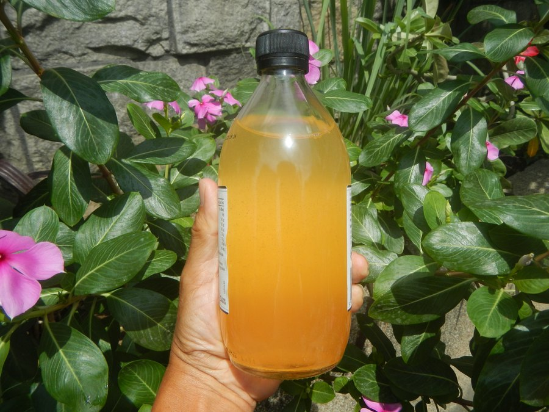
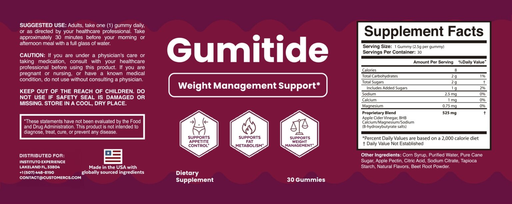

Does Gumitide Work? The Apple Cider Vinegar and BHB Evidence, Dose by Dose
Gumitide leans on two ingredients with real research behind them. The question is whether one small gummy gets anywhere near the amounts that research used.

Key takeaways
- Short answer: not on its own. Gumitide doesn't contain enough of either ingredient to match the studies its marketing borrows from.
- Vinegar trials used 15 to 30 ml a day. That's roughly 750 to 1,500 mg of acetic acid, more than Gumitide's entire 525 mg blend.
- BHB salts are fuel, not a fat burner. They raise blood ketones for a few hours, and your body burns them instead of its own fat.
- The label's mineral lines are tiny. That points to a BHB portion in the tens of milligrams, while ketone studies use grams.
- What moves weight is still diet, activity and sleep. A pre-meal gummy can be a cue for those habits, nothing more.
Does Gumitide work? Not as a weight-loss product by itself. Its apple cider vinegar and BHB blend totals 525 mg, while vinegar studies used 15 to 30 ml of liquid vinegar daily and ketone studies use grams of BHB. The modest results in those trials came alongside diet. Gumitide can, at most, support a pre-meal routine.
We want to be fair to the product, so this page doesn't stop at "the dose is low." It goes through each ingredient, shows what the research measured, estimates what one gummy can hold, and then looks at the things that do change body weight. If you want the full product rundown with price and refund terms, our complete Gumitide review covers that.
Gumitide: check today's price
An apple cider vinegar and BHB gummy, one a day, 8 calories each. Sold only on the official site, with a 60-day money-back guarantee.
See the official price →What would Gumitide need to do to work?
The label claims support for appetite control, fat metabolism and weight management. For any of that to show up on a scale, the gummy would have to change one of three things: how much you eat, how much energy you burn, or how your body stores and releases fat.
Apple cider vinegar is the ingredient with a plausible link to the first one, through fullness and blood sugar after meals. BHB is pitched at the third, through ketosis. Nothing on the label targets energy burned. There's no caffeine or other stimulant at all, which is good for tolerance but rules out any thermogenic effect.
Is there a clinical study on Gumitide itself?
Not that we could find. There's no published trial of the finished Gumitide gummy, at its dose, in people trying to manage weight. Everything you'll read in its favor, including on this page, is about the ingredients.
That distinction matters more than it sounds. A study showing that two tablespoons of vinegar a day nudged weight down over three months says nothing about a 2.5 g gummy with an undisclosed share of vinegar powder. Ingredient evidence tells you whether an idea is plausible. Only product evidence tells you whether a specific bottle delivers it.
This isn't unusual. Very few supplements in the weight aisle have been tested as finished products, and the NIH's Office of Dietary Supplements notes that most weight-loss supplement ingredients have little evidence of meaningful effect. Gumitide sits squarely in that category.
What does the research on apple cider vinegar show?
The study most often quoted is a 2009 Japanese trial. About 150 adults with obesity drank a beverage containing 15 ml or 30 ml of vinegar, or a placebo drink, every day for 12 weeks. Both vinegar groups lost slightly more weight and body fat than placebo. The difference was small, roughly 2 to 4 pounds over three months, and some of it came back after they stopped.
Other work points to blood sugar. Several small studies found that vinegar taken with a carb-heavy meal can blunt the glucose rise that follows. That's where the appetite idea comes from: steadier glucose, fewer crashes, less snacking. It's a reasonable theory with limited proof in weight terms.
One awkward finding deserves a mention. A UK study looking at vinegar and appetite found that people did eat a little less, but part of that seemed to come from feeling queasy. Mild nausea isn't the kind of appetite control anyone signs up for.
Mayo Clinic's summary of the evidence is blunt: vinegar doesn't look like an effective weight-loss approach on its own. We agree with that reading.
How much apple cider vinegar is in a Gumitide gummy?
The label doesn't say. Apple cider vinegar shares a 525 mg proprietary blend with BHB salts, and the split isn't printed. But we can still put a ceiling on it, because the active part of vinegar is acetic acid, and liquid vinegar is about 5% acetic acid.

| Acetic acid per day | Notes | |
|---|---|---|
| 15 ml liquid vinegar (lower trial dose) | About 750 mg | Roughly one tablespoon |
| 30 ml liquid vinegar (higher trial dose) | About 1,500 mg | Roughly two tablespoons |
| One Gumitide gummy, entire blend | Under 525 mg, likely far under | Blend is shared with BHB; ACV powders are not pure acetic acid |
Even in the impossible case where the whole blend were pure acetic acid, one gummy would fall short of the lower trial amount. Dried vinegar powders used in gummies are mostly carrier material, so the real acetic acid content is a small slice of the vinegar weight. You'd need a handful of gummies a day to approach the studies, and you'd get a handful of sugar with them.
To be fair, the gummy format does solve real problems with liquid vinegar. Straight vinegar is harsh on tooth enamel and the throat, and plenty of people can't stand the taste. A chewable avoids both. The trade is that convenience costs you the dose. If the research amount matters to you, a tablespoon of vinegar diluted in a big glass of water with a meal is the cheaper and more faithful copy of the trials, though it's worth clearing with your doctor if you take diabetes medication or diuretics.
Do BHB salts burn fat?
BHB, or beta-hydroxybutyrate, is the main ketone your liver makes when carbs are scarce. In nutritional ketosis, your body is breaking down fat to make those ketones. That's the state keto diets aim for.
Taking BHB salts skips that step. The ketones arrive ready-made. Blood levels rise for a few hours, and your cells burn them as fuel. Here's the catch: when ketones are already available, the body has less reason to release its own fat, and ketones actually slow fat release from fat tissue. So the ketones on a blood test are coming from the supplement, not from your fat stores.
That's why researchers who study exogenous ketones talk about athletic performance, appetite after a drink, and brain fuel, not about fat loss. And it's why "keto without the diet" claims don't hold. You can't be in dietary ketosis while eating your usual carbs, whatever you take beforehand. If you're curious how other ketone sources compare, our page on MCT oil and ketones covers the most studied one.
How much BHB does Gumitide contain?
Again, the label doesn't split the blend. But BHB salts are a ketone bound to a mineral, so the mineral lines on the panel give a clue. Gumitide lists 2.5 mg of sodium, 1 mg of calcium and 0.75 mg of magnesium per gummy.
Sodium makes up about 18% of sodium BHB by weight. Calcium is about 16% of calcium BHB, and magnesium about 10% of magnesium BHB. Working backwards, if every bit of those minerals came from BHB, the gummy would hold somewhere under 30 mg of BHB salts in total. Some of the sodium also comes from sodium citrate, listed under other ingredients, so the real figure is likely lower still. This is our arithmetic from the label, not a number the company publishes.
Studies on ketone salts typically give several grams per dose, often 10 g or more, to raise blood ketones meaningfully. A few dozen milligrams is a different universe. Whatever the blend's balance is, the BHB in a Gumitide gummy is far too small to do what ketone research describes.
Large doses of ketone salts come with their own trade-offs, too. Grams of sodium BHB carry real sodium, and many people get stomach upset at research doses. In that light, a tiny BHB portion is arguably the safer design. It just can't also be the effective one.
Can Gumitide help with appetite control?
Possibly a little, and mostly through behavior. The suggested use is a gummy with a full glass of water about 30 minutes before a meal. Water before meals has some evidence of helping people eat slightly less, especially older adults. A small sweet chew can also take the edge off pre-lunch snacking for some people.
Neither of those depends on the vinegar or BHB dose. That's not a knock if the routine works for you. It's just an honest description of where any effect is likely to come from.
Does taking it 30 minutes before a meal matter?
The timing makes sense on paper. In the vinegar studies on blood sugar, vinegar was taken just before or with a meal, because the idea is to slow how fast starch turns into glucose. A dose taken hours earlier wouldn't be around for that. So if you do use Gumitide, the label's pre-meal timing is the right one.
Pick the meal where you tend to overeat. For many people that's lunch at work or a late afternoon meal after a long gap. A gummy and a glass of water 30 minutes before that meal is the version of this routine most likely to change anything.
What actually moves body weight?
If you're reading a page called "does Gumitide work," you probably want results more than a debate about acetic acid. These are the levers with real evidence behind them, roughly in order of size.
- A steady calorie deficit. It's unglamorous, but it's the mechanism every successful method shares, keto included.
- More protein and fiber at meals. Both keep you full longer, which makes the deficit easier to hold.
- Fewer liquid calories. Soda, juice and sweet coffee drinks add up without filling you.
- Daily movement. Walking won't burn off a big meal, but it helps keep weight off and supports blood sugar. Our page on the benefits of daily walking covers more.
- Seven or more hours of sleep. Short sleep raises hunger hormones and cravings the next day.
- Medical treatment where it fits. For people who qualify, prescription GLP-1 drugs produce far larger effects than any supplement. That's a conversation for your doctor.
Notice what's missing from that list: any single food, drink or ingredient. Grapefruit, green tea, vinegar and ketone drinks have all had their moment. Each produced small or no effects once tested properly. The approaches that last are the ones you can keep doing for a year without thinking about them.
None of these need a gummy. A gummy also doesn't stop any of them from working. If a pre-meal Gumitide helps you remember to drink water and eat a little slower, it can sit alongside these habits. The habits are what show up on the scale.
Who might get something out of Gumitide, and who shouldn't bother?
It might suit someone who likes a small ritual before meals, dislikes the taste of liquid vinegar, and treats the gummy as a reminder rather than a treatment. The 60-day guarantee on official orders makes a short trial lower risk.
Skip it if you're expecting a noticeable fat-loss effect, if you have diabetes and take glucose-lowering medication without talking to your doctor first, or if you're on a strict sugar limit and would rather not add 2 g a day. If you already drink diluted vinegar before meals, Gumitide adds nothing you aren't getting. And if you're comparing it with its near twin, our Gumitide vs JellyTide breakdown shows the panels are identical.
So, does Gumitide work?
As a product that causes weight loss, no. The vinegar portion is below what trials used, the BHB portion is tiny, and BHB salts don't trigger fat burning even at full doses. That's what the label and the research add up to.
As a low-calorie cue that helps some people slow down before a meal, it can play a small role. Go in with that expectation, and you won't be disappointed by the scale. For the broader picture on food, sleep and activity, our energy and metabolism section is a good next read.
Gumitide: check today's price
An apple cider vinegar and BHB gummy, one a day, 8 calories each. Sold only on the official site, with a 60-day money-back guarantee.
See the official price →Frequently asked questions
How long does Gumitide take to work?
There's no clinical timeline for Gumitide itself. In the main vinegar trial, small differences appeared over 12 weeks at doses far higher than one gummy. If you try it, judge it on habits like hunger before meals over four to six weeks, not on the scale after a few days.
Will Gumitide put me in ketosis?
No. BHB salts can briefly raise ketones in your blood, but ketosis in the dietary sense comes from cutting carbs or fasting until your liver makes its own ketones. A gummy taken with normal meals won't do that.
Is it better to drink apple cider vinegar instead?
If you want the dose used in studies, liquid vinegar is the only practical way to get it. Dilute one tablespoon in a large glass of water, drink it with a meal, and rinse your mouth afterwards to protect tooth enamel. Check with your doctor if you take diabetes or diuretic medication.
Can I take two Gumitide gummies a day for a stronger effect?
The label says one a day unless a healthcare professional directs otherwise. Doubling up still wouldn't reach research doses and would double the sugar. It's better to follow the label.
Does Gumitide lower blood sugar?
It isn't proven to and shouldn't be used for that. Vinegar has been studied for after-meal glucose at much larger amounts. If you manage blood sugar with medication, don't change anything without your doctor.
Why do so many keto gummy ads show dramatic before-and-after photos?
Ads in this category often use stock images or results from people who also changed their diet. Neither shows what a gummy did. Look for the label and the dose instead, and treat any promised number of pounds as a red flag.
Want to try Gumitide as part of a routine?
One gummy a day, 8 calories, with a 60-day money-back guarantee on official orders. Check the current price on the official page.
See Gumitide's official price →Related: Gumitide review · Does JellyTide work? · MCT oil and brain function · Walking and brain health